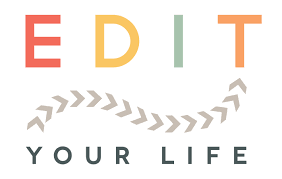

L'editoriale è l'articolo di apertura di una pubblicazione periodica in cui il direttore o un giornalista molto esperto e conosciuto dal pubblico (una «grande firma») tratta un problema o un fatto di rilevante attualità. Molti giornali hanno un corpo di editorialisti.